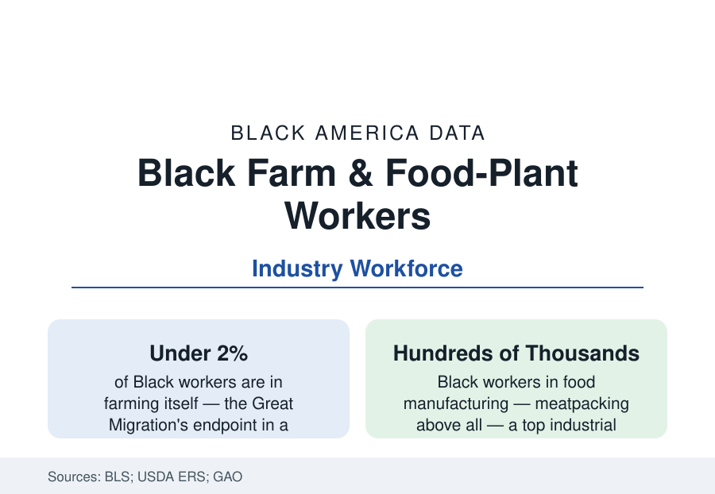

Black Employment
Black Workers in Agriculture and Food Processing: From the Fields to the Plants
Fewer than two percent of Black workers remain in agriculture — but the meatpacking plants and food factories employ hundreds of thousands. The BLS and USDA data.

A century ago, farming was Black America's occupation — the majority of Black workers worked the land at the century's turn. Today the Bureau of Labor Statistics counts Black workers in farming, fishing, and forestry at under two percent of Black employment, among the smallest shares of any group: the Great Migration's destination, measured. But food's industrial half tells a different story — the meatpacking plants, poultry processors, and food factories of the rural South and Midwest employ Black workers in the hundreds of thousands, in the hardest industrial jobs in the data. This article reports both halves.
The Farm Workforce's Residual
The hired farm workforce of the USDA and Labor Department's surveys is today predominantly immigrant — the National Agricultural Workers Survey places the foreign-born share of crop workers around two-thirds or more — with the native-born Black farm workforce reduced to niches: the Black Belt's remaining family-farm labor (the farmers profile), the Louisiana sugar and Mississippi catfish belts' local workforces, the forestry and timber crews of the pine South (a historically Black occupation in the turpentine-to-lumber line), and the seafood processing of the Gulf (the oyster and crab houses' Black shucking workforce, a Chesapeake and Gulf tradition in the data). The H-2A guestworker program's explosive growth (certified positions in the hundreds of thousands annually) supplies the fields' modern labor on terms the worker-advocacy data contest — a system whose demographics replaced, rather than integrated, the old workforce.
Meatpacking: The Plant Towns
Food manufacturing is the real file. The meat and poultry industries — restructured since the 1980s from union urban plants to rural mega-plants — employ workforces in which Black workers form a major share (in the poultry South, often the largest single group alongside Latino immigrants): the broiler belt's plants from Delaware's shore through Georgia, Alabama, Mississippi, Arkansas, and east Texas; the pork plants of North Carolina and the Midwest (the Smithfield Tar Heel plant's famous organizing war, won by the UFCW in 2008 after sixteen years, is the era's landmark Black-Latino labor story); the beef plants of the plains, where the Black share is smaller and the immigrant share larger. The plant towns' demography is the data's distinctive product: rural counties whose schools, churches, and housing reorganized around a single plant's shifts — several of them majority-Black or Black-Latino towns in the heart of the rural South of the census profile.
The Safety and Wage Ledger
The GAO's repeated studies give the industry's conditions their federal documentation: meatpacking records among the highest injury and illness rates in manufacturing (amputations, lacerations, musculoskeletal disorders at rates the plant-level OSHA data detail), line speeds as the perpetual regulatory fight, and a wage structure that — after the union era's destruction and partial rebuilding — pays in the mid-teens to around twenty dollars in the recent tight-labor years, up from the industry's infamous post-1980s collapse. The pandemic wrote the file's darkest chapter in the data: the plants were among the deadliest workplace outbreak sites in America in 2020, their essential-worker workforces — Black and immigrant above all — absorbing infection and death rates the CDC's county studies mapped onto the plant towns precisely. The Essential Workers' era policy (the executive orders keeping plants open, the liability fights) is recorded in the file beside the casualty counts.
Catfish, Sugar, and the Specialty Belts
The specialty economies complete the map in the old geographies: Mississippi Delta catfish (the industry that rose on the Delta's flatlands in the 1970s–80s, its processing plants a Black workforce whose 1990 strike at Delta Pride entered labor history), Louisiana sugar (the cane harvest's mechanization ending the hand-cutting era within living memory), the tobacco warehouses' remnant, the sweet potato and peanut belts' seasonal crews, and the Gulf seafood processors. Each niche's data repeat the structure — Black labor foundational, ownership elsewhere, mechanization and immigration redrawing the workforce — at parish and county scale.
Reading the Agriculture and Food Data
The two halves together are the migration's full circle: Black America left the farm so completely that farming itself is now a rounding error in its employment — and then the food system industrialized around the places it left to and stayed in, so that the plants of the rural South employ its grandchildren at the line instead of the row. The occupation changed from the field to the factory; the data on who does America's hardest food work, and at what cost to their bodies, changed far less.
More in Black Employment
The Black Unemployment Rate: The Two-to-One Pattern
Black unemployment runs at roughly twice the White rate — 5.5 percent against 3.3 percent in annual averages — a ratio stable across five decades of federal data. How it is measured and why it persists.
Black Median Weekly Earnings: The 80-Cent Ratio
Black full-time workers earn a median of about $900 a week — roughly 80 cents for every dollar White workers earn. The BLS earnings data by group, gender, and occupation.
Black Labor Force Participation: Working at National Rates
Black labor force participation runs at roughly the national rate — and Black women participate at higher rates than White women. The BLS participation data.
Source: U.S. Bureau of Labor Statistics; USDA Economic Research Service farm labor data; Government Accountability Office meatpacking safety studies; Economic Policy Institute food manufacturing research.